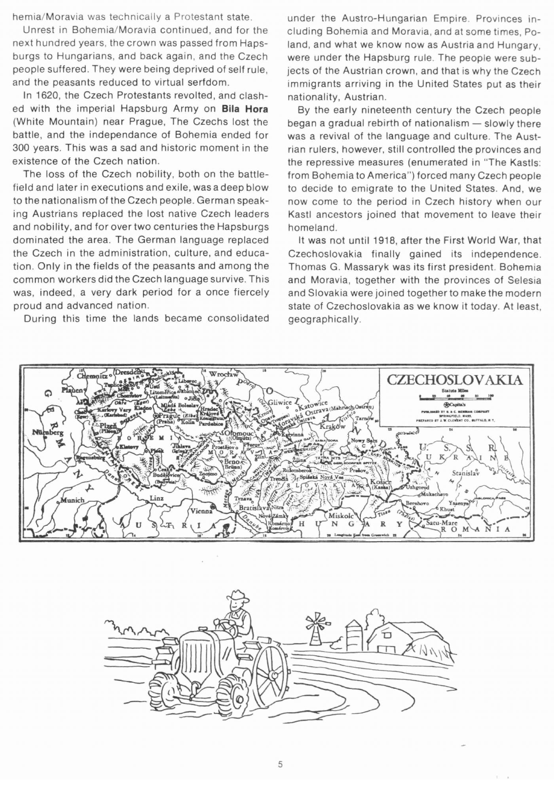

The book · A Brief History of Czechoslovakia (Bohemia/Moravia)
Page 5


Transcription
hemia/Moravia was technically a Protestant state.
Unrest in Bohemia/Moravia continued, and for the next hundred years, the crown was passed from Hapsburgs to Hungarians, and back again, and the Czech people suffered. They were being deprived of self rule, and the peasants reduced to virtual serfdom.
In 1620, the Czech Protestants revolted, and clashed with the imperial Hapsburg Army on Bila Hora (White Mountain) near Prague, The Czechs lost the battle, and the independance of Bohemia ended for 300 years. This was a sad and historic moment in the existence of the Czech nation.
The loss of the Czech nobility, both on the battlefield and later in executions and exile, was a deep blow to the nationalism of the Czech people. German speaking Austrians replaced the lost native Czech leaders and nobility, and for over two centuries the Hapsburgs dominated the area. The German language replaced the Czech in the administration, culture, and education. Only in the fields of the peasants and among the common workers did the Czech language survive. This was, indeed, a very dark period for a once fiercely proud and advanced nation.
During this time the lands became consolidated under the Austro-Hungarian Empire. Provinces including Bohemia and Moravia, and at some times, Poland, and what we know now as Austria and Hungary, were under the Hapsburg rule. The people were subjects of the Austrian crown, and that is why the Czech immigrants arriving in the United States put as their nationality, Austrian.
By the early nineteenth century the Czech people began a gradual rebirth of nationalism — slowly there was a revival of the language and culture. The Austrian rulers, however, still controlled the provinces and the repressive measures (enumerated in "The Kastls: from Bohemia to America") forced many Czech people to decide to emigrate to the United States. And, we now come to the period in Czech history when our Kastl ancestors joined that movement to leave their homeland.
It was not until 1918, after the First World War, that Czechoslovakia finally gained its independence. Thomas G. Massaryk was its first president. Bohemia and Moravia, together with the provinces of Selesia and Slovakia were joined together to make the modern state of Czechoslovakia as we know it today. At least, geographically.


Transcriber’s notes
Continues the history chapter from page 4 (s006); the first word completes 'Bo-/hemia'. Two-column text above a wide map and a decorative farm drawing. Book spellings kept: independance, Massaryk, Selesia.